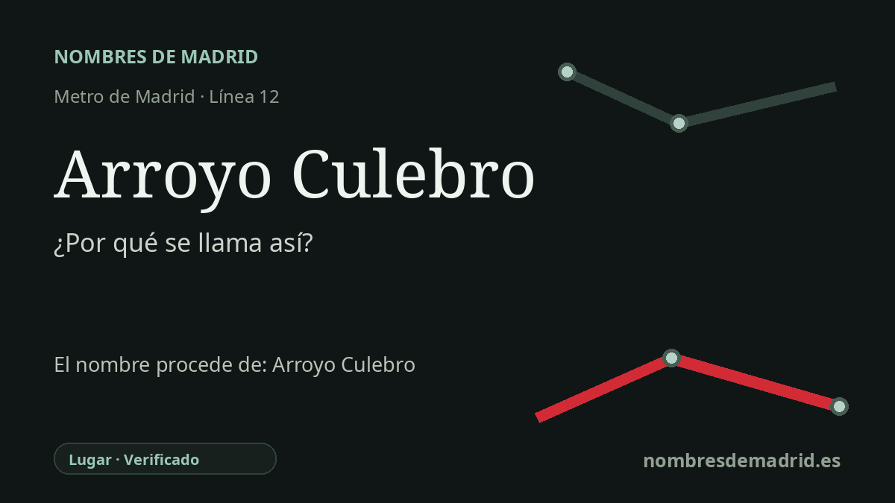

Publicado el · Investigación de Nombres de Madrid · Cómo verificamos cada origen · 11 fuentes consultadas
Respuesta rápida
La estación de Arroyo Culebro recibe su nombre del arroyo Culebro, cauce y zona urbana del entorno de Getafe y Leganés. El hidrónimo significa aproximadamente «arroyo de la culebra», aunque la idea de que aluda concretamente a su trazado sinuoso sigue siendo una inferencia.
La historia del nombre
La estación de Arroyo Culebro toma su nombre del arroyo Culebro, el cauce que también da nombre a zonas urbanas e infraestructuras del sur metropolitano de Madrid. La información oficial de la línea 12 sitúa la estación en Getafe, en el paseo de Juan José Rosón, mientras que el Consorcio Regional de Transportes de Madrid localiza su acceso en la calle de las Ciencias, 14. La estación abrió con MetroSur, la línea 12 circular que conecta Alcorcón, Móstoles, Fuenlabrada, Getafe y Leganés, el 11 de abril de 2003.
El nombre que hay detrás de la estación es, por tanto, anterior al Metro. El Museo Virtual de Getafe describe el arroyo Culebro como uno de los dos cauces principales del municipio, junto con el Manzanares. Indica que el arroyo tiene su origen en la laguna de Mari Pascuala, en Polvoranca, dentro del término municipal de Leganés, y que un largo tramo meridional atraviesa Getafe. Otra documentación ambiental oficial lo sitúa entre Getafe y Pinto, le atribuye unos 28 km y señala que nace en Leganés y desemboca en el Manzanares.
Desde el punto de vista lingüístico, el nombre es claro, pero conviene formularlo con precisión. La Real Academia Española define culebro como un sustantivo masculino desusado equivalente a culebra, y culebra procede del latín colubra. Eso permite interpretar el hidrónimo como «arroyo de la culebra» o «arroyo serpiente». Lo que las fuentes disponibles no demuestran es el paso adicional que suele repetirse: que el nombre se eligiera concretamente porque el cauce serpentea por el terreno.
El arroyo también ayuda a entender la geografía urbana reciente de la zona. El Programa de Actuación Urbanística «Arroyo del Culebro», aprobado en 1989 y citado en documentación oficial de 1991, afectaba a terrenos de Getafe, Leganés y Pinto; la prensa de los años noventa hablaba además de la «Operación Arroyo Culebro» como un gran eje de desarrollo del sur. Cuando llegó MetroSur en 2003, Arroyo Culebro ya no era solo un nombre de cauce: era un topónimo usado para barrios, parques, áreas industriales, obras de saneamiento y paradas de transporte.
El paisaje tiene también una historia mucho más antigua. El Museo Virtual de Getafe recoge el yacimiento de Arroyo del Culebro, descubierto durante la Carta Arqueológica de 1987, con materiales de la Edad del Hierro en una zona afectada por extracciones de áridos y obras junto al cauce. La etimología pública más segura es, por tanto, sencilla: la estación se llama así por el hidrónimo Arroyo Culebro y por la zona urbana asociada a él. El significado relacionado con la culebra está bien apoyado por la lexicografía; el motivo original exacto del hidrónimo sigue sin confirmación directa.